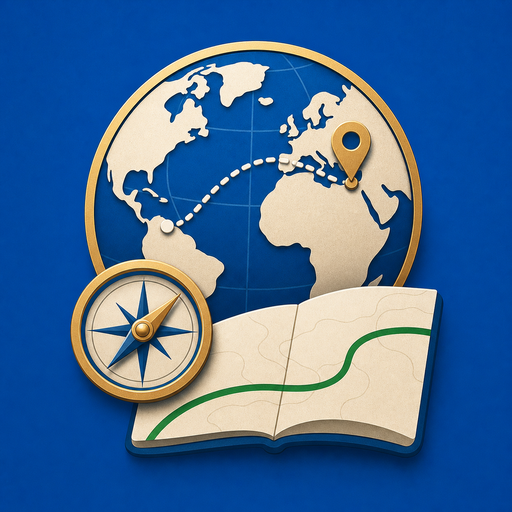
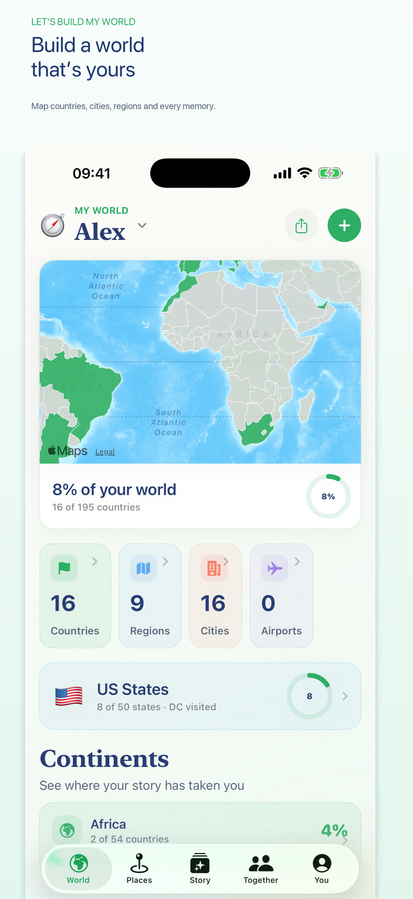
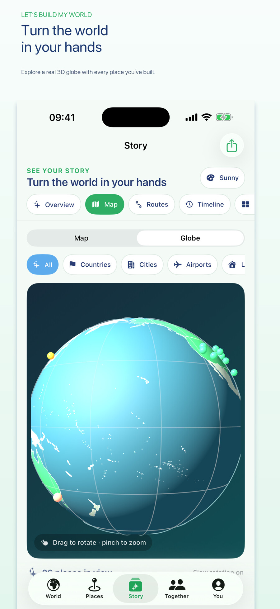
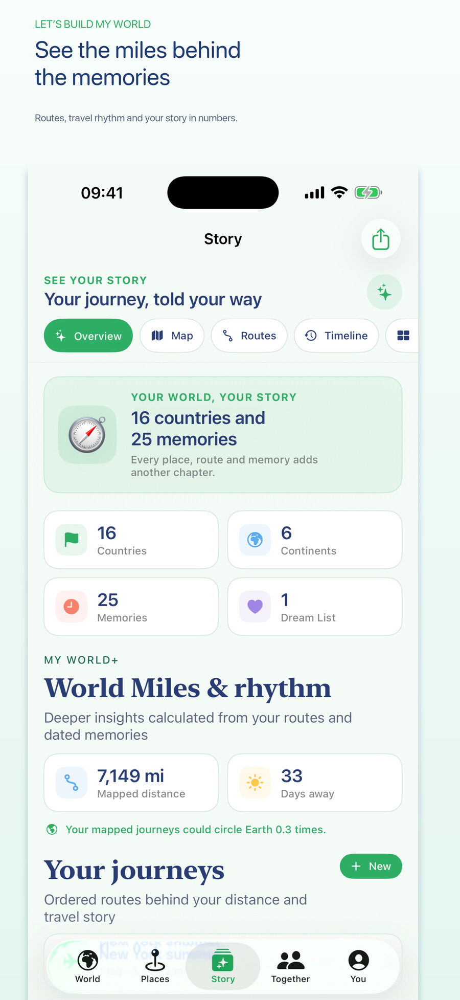
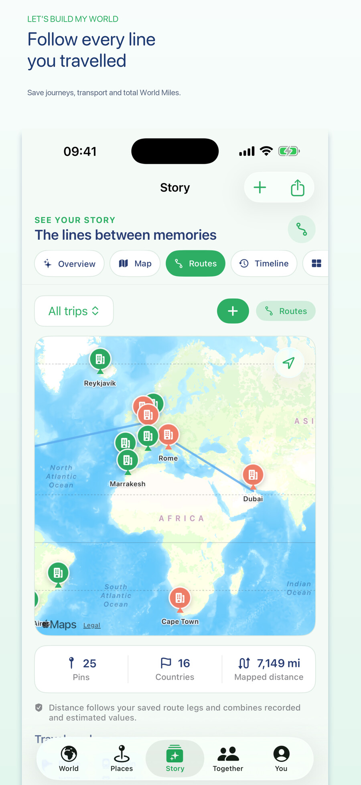
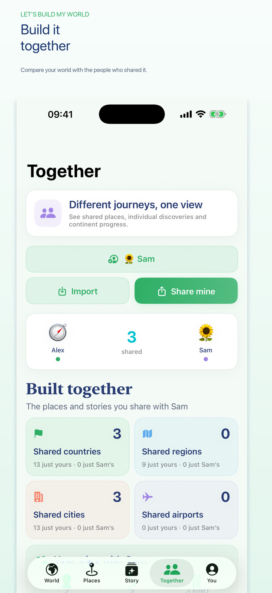

Add countries, regions, cities, airports and all 50 US states, with Washington, DC tracked separately.

Available on App StoreBuild a world that’s yours.
Map the countries, regions, cities, airports and US states that shaped your story—then turn those visits into routes, timelines, miles, memories and beautiful things to share.
iPhone & iPadNo accountLocal-firstFree core


Current App Store submission
See more than pins on a map.
These are the current iPhone submission screens. The app connects places to journeys, dates, companions, photographs and the story behind the distance.



Map, remember and relive
A richer record of everywhere you’ve been.
Use an exact date, month, year or an undated visit, then add notes, photographs, companions and repeat visits.
Move between overview, map, globe, routes, timeline, collections, milestones and annual recaps.
Connect route legs into journeys and see mapped distance, days away and travel rhythm.
Optional Photo Discovery analyses dates and locations on-device, then waits for your approval before adding anything.
Make yearbooks, cinematic timeline videos, PDF memory books and privacy-conscious comparison files.
My World+
The essentials stay free.
The free app covers the essentials for building and keeping your travel map. My World+ adds deeper insights, extra profiles, annual recaps, Photo Discovery, Together insights, cinematic replay and premium creations.
Apple offers monthly, annual and lifetime options in the current App Store version. The annual option includes a seven-day trial for eligible new subscribers, and Family Sharing is supported.
Your world is more than a checklist.
Let’s Build My World is available now for iPhone and iPad, with a free core experience and optional My World+ upgrades.